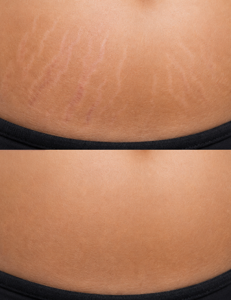
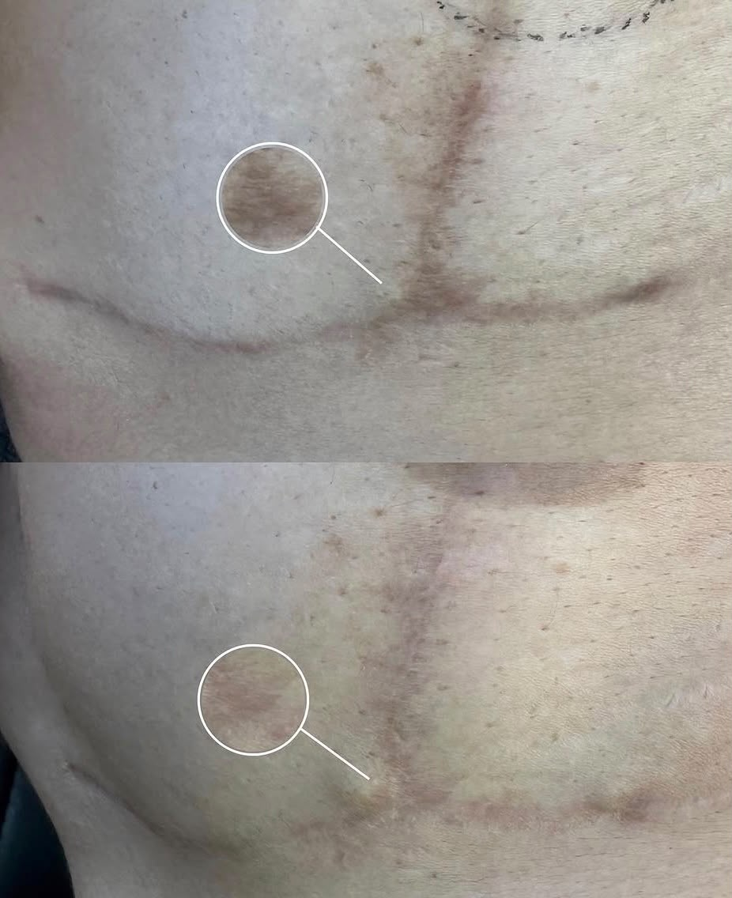
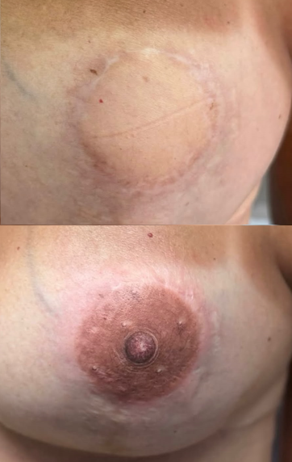
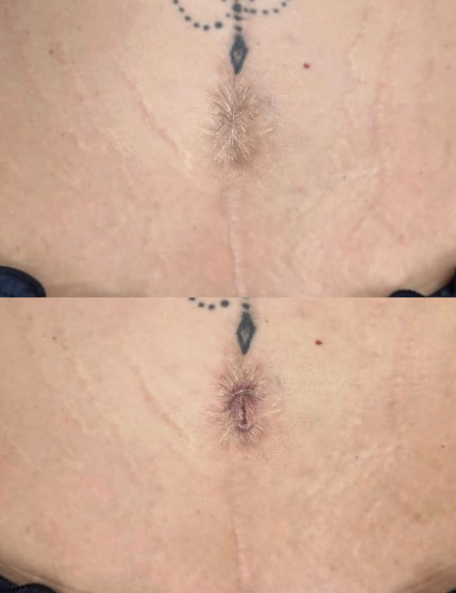

Dermopigmentação paramédica Método transforma(dor)
Dermopigmentação paramédica une ciência, técnica e arte. Ela restaura a cor, formato e estruturas, de forma realista, e é voltada especificamente para a reconstrução estética da pele.
Sobre
Meu nome é Priscila Menezes, tenho 38 anos, sou Enfermeira especializada em Dermopigmentação Paramédica.
Um procedimento que vai muito além da estética, ressignifaca a dor e transforma histórias em símbolos de superação.
Meu maior propósito é acolher pessoas com cuidado e respeito, oferecendo resultados capazes de fazer com que cada paciente volte a se reconhecer diante do espelho.
Serviços
Cada procedimento é planejado de forma individualizada, respeitando a sua história e o seu tom de pele.
Camuflagem de estrias
Pigmentação especializada para camuflagem de estrias

Camuflagem de cicatriz
Pigmentação especializada para camuflagem de cicatriz

Reconstrução de aréola
Pigmentação especializada para camuflagem de cicatriz

Reconstrução de umbigo
Pigmentação especializada para camuflagem de cicatriz
Perguntas frequentes
O procedimento doi?
O desconforto é mínimo, mas pode variar de pessoa para pessoa.
É preciso fazer avaliação antes?
Sim, a avaliação é realizada para verificar as condições da pele e possíveis contraindicações.
Quem pode fazer o procedimento?
A dermopigmentação paramédica pode ser indicada para pessoas que passaram por cirurgias, possuem cicatrizes ou outras alterações na pele.